Cadires
2022
Egipte
Projecte personal
Digital
Vaig fotografiar aquestes cadires com qui documenta una absència momentània. Són estructures de fusta senzilla i fibres adobades que es neguen a desaparèixer, algunes reforçades tantes vegades que cada reforç a les potes o als respatllers ja és part de la seua identitat. En aquests carrers, allò que es trenca no es tira; es cura i persisteix. Cada cicatriu visible converteix la cadira en un objecte esculpit pel temps, una peça plena de memòria que aguanta a la vora de la vorera, sempre a punt per tornar a rebre qui es va aixecar només per un instant per mirar el món des d’un altre lloc.
Fotografié estas sillas como quien documenta una ausencia momentánea. Son estructuras de madera sencilla y fibras curtidas que se niegan a desaparecer, algunas reforzadas tantas veces que cada refuerzo en sus patas o en sus respaldos es ya parte de su identidad. En estas calles, lo que se rompe no se desecha; se cura y persiste. Cada cicatriz visible convierte a la silla en un objeto esculpido por el tiempo, una pieza llena de memoria que aguanta en la orilla de la acera, siempre lista para volver a recibir a quien se levantó solo por un instante para mirar el mundo desde otro lugar.
I photographed these chairs as one might document a momentary absence. They are simple wooden structures with cured fibers that refuse to disappear, some reinforced so many times that each repair on their legs or backs has become part of their identity. On these streets, what breaks is not thrown away; it is healed and endures. Every visible scar turns the chair into an object sculpted by time, a piece filled with memory that remains on the edge of the sidewalk, always ready to receive again the one who stood up only for an instant to look at the world from another place.
صوَّرتُ هذه الكراسي كمن يوثِّق غياباً عابراً. إنها هياكل من الخشب البسيط والألياف المدبوغة، تأبى أن تختفي؛ بعضها رُمِّم مرات عديدة حتى غدا كل ترميم في قوائمه أو في ظهوره جزءاً لا يتجزأ من هويته. في هذه الشوارع، ما يتكسَّر لا يُرمى؛ بل يُداوى ويمضي في الوجود. كل ندبة ظاهرة تحوِّل الكرسي إلى شيء نحته الزمن، قطعة مثقلة بالذاكرة، تصمد على حافة الرصيف، دائماً في انتظار أن تحتضن من نهض للحظة ليرى العالم من مكان آخر.
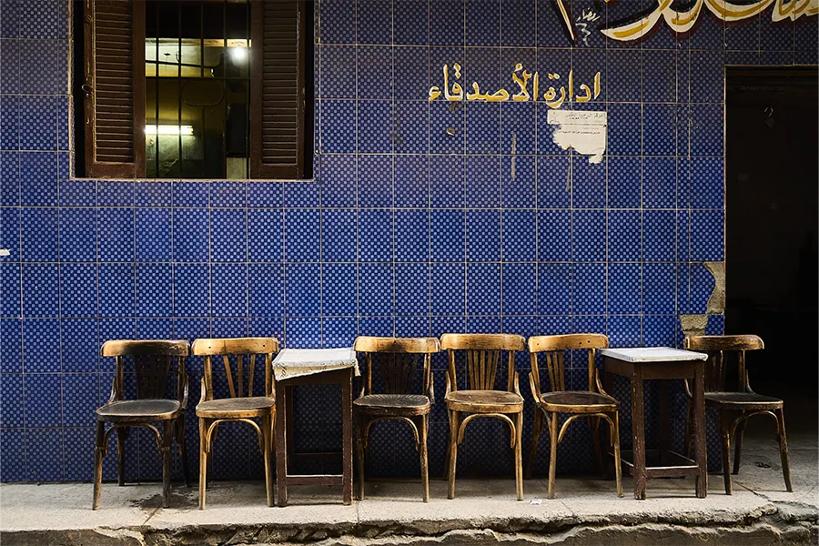
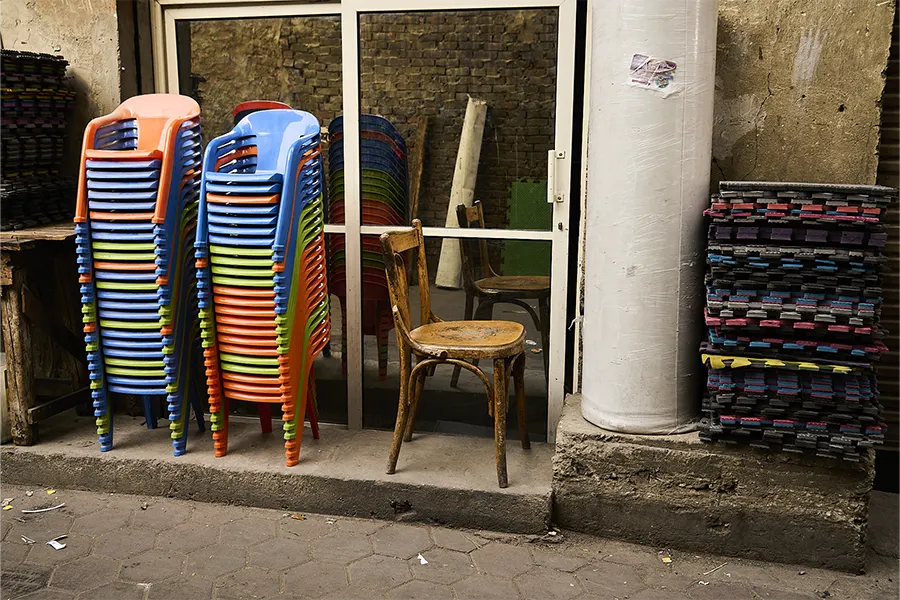
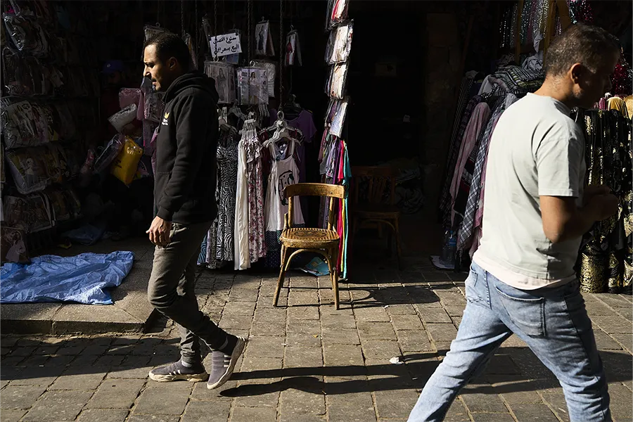
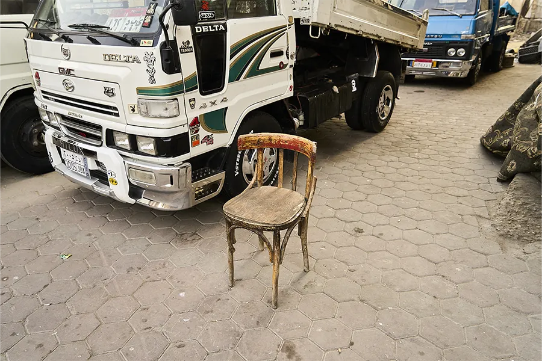
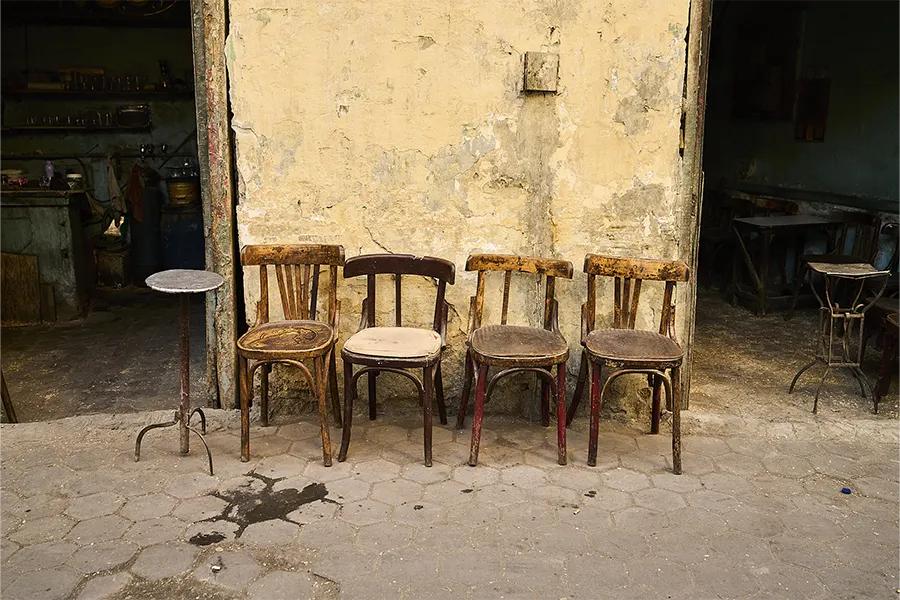
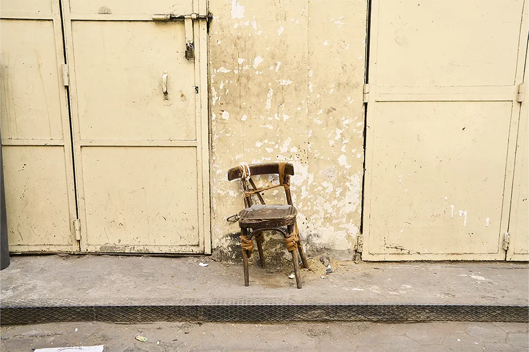
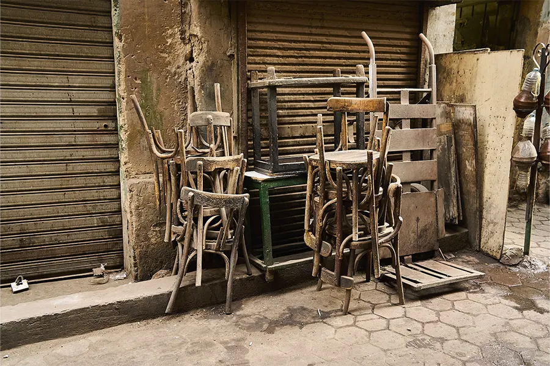
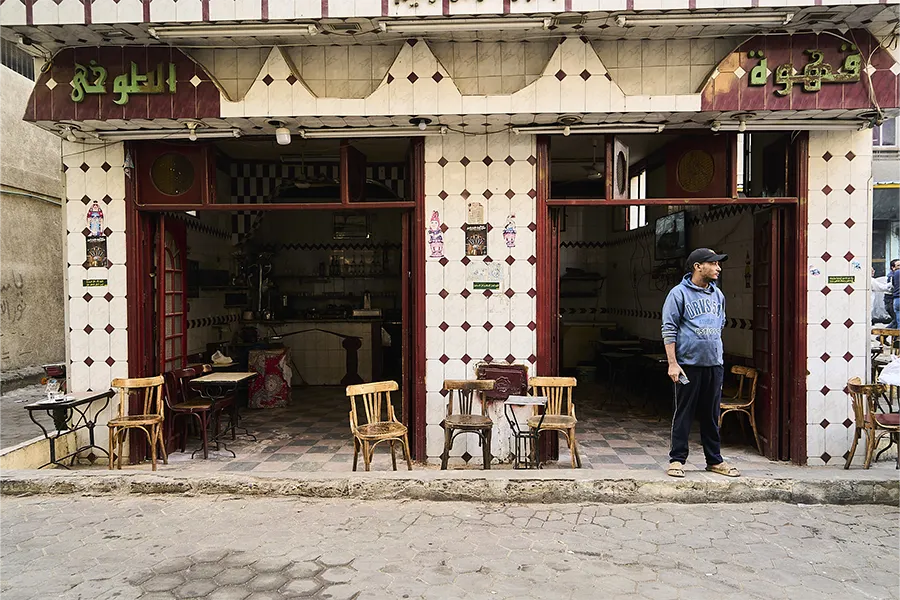
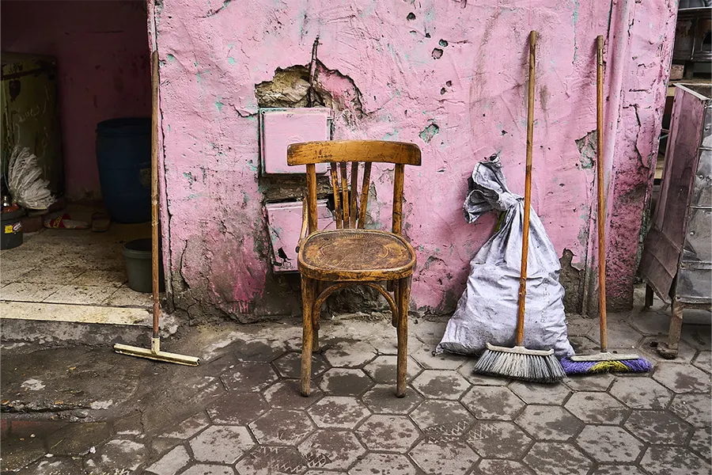
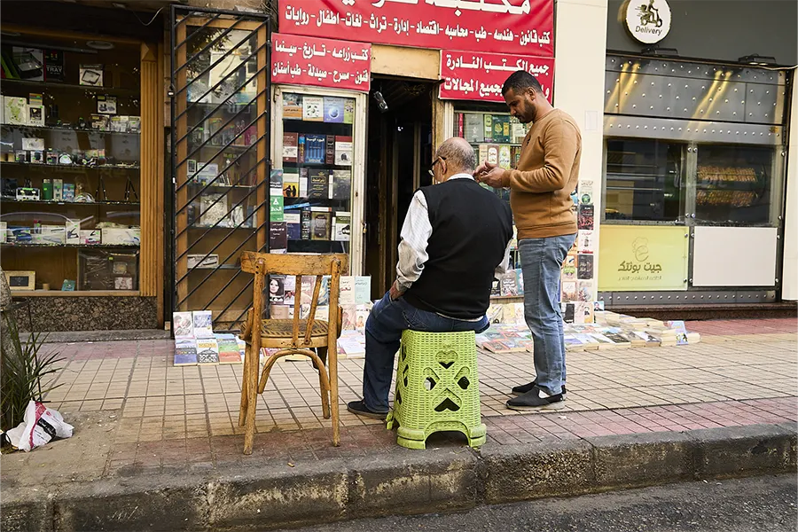
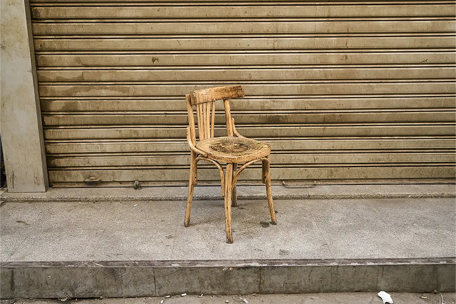
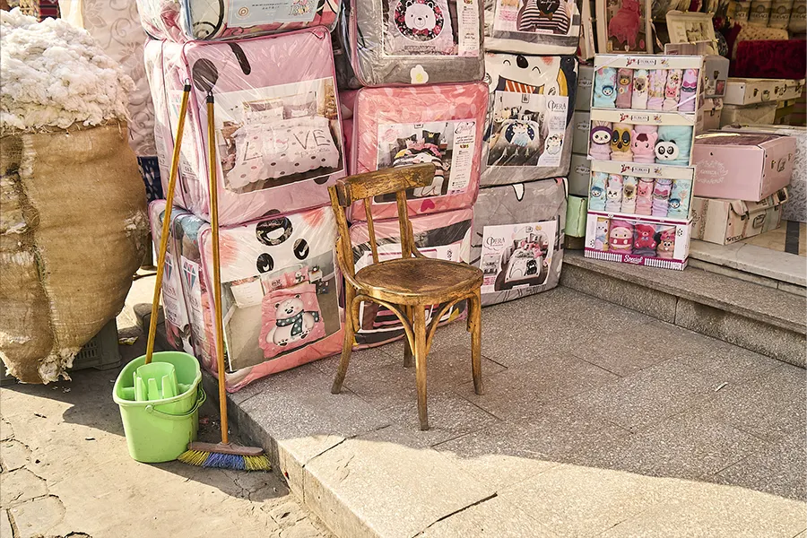
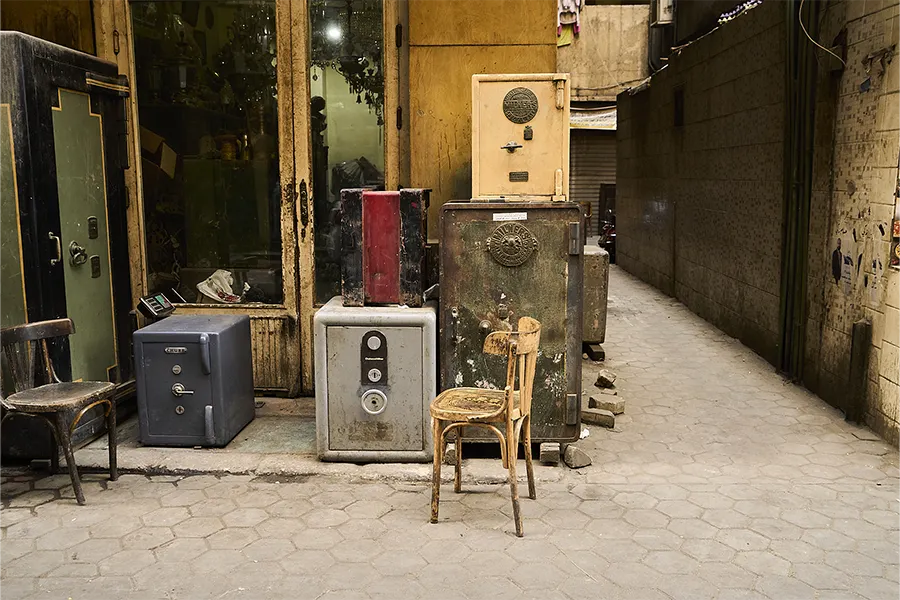
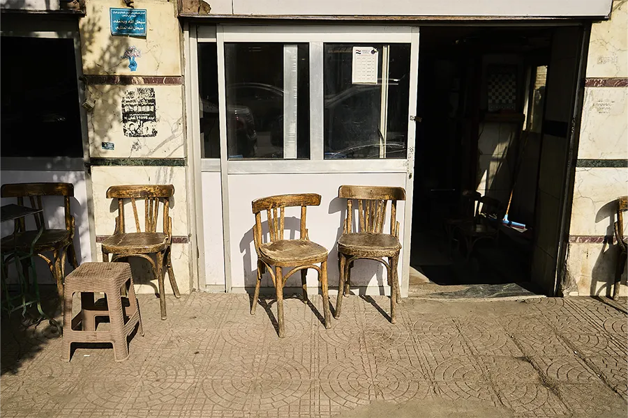
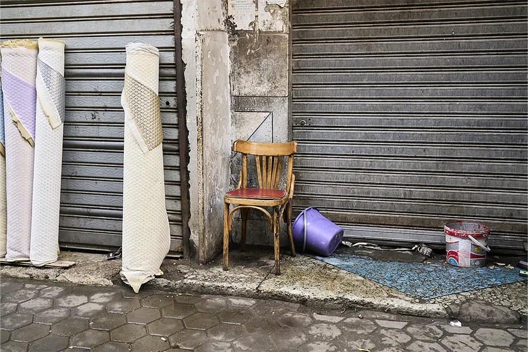
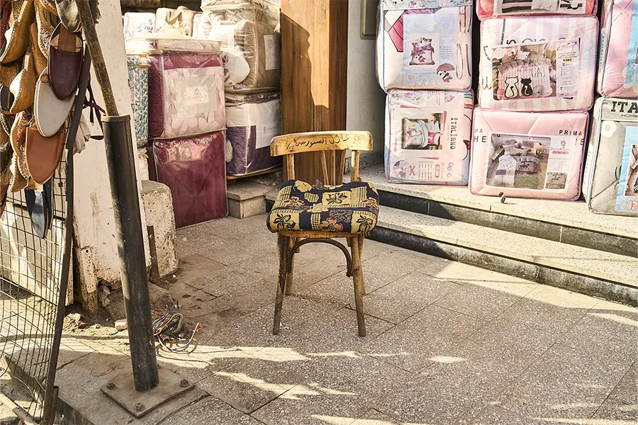
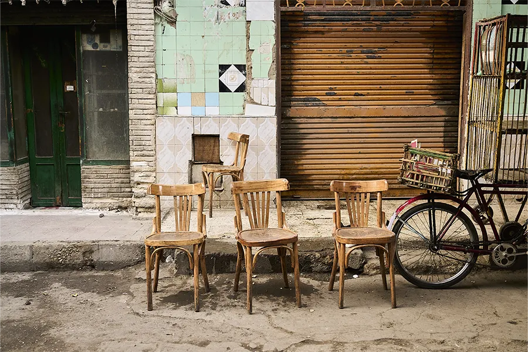
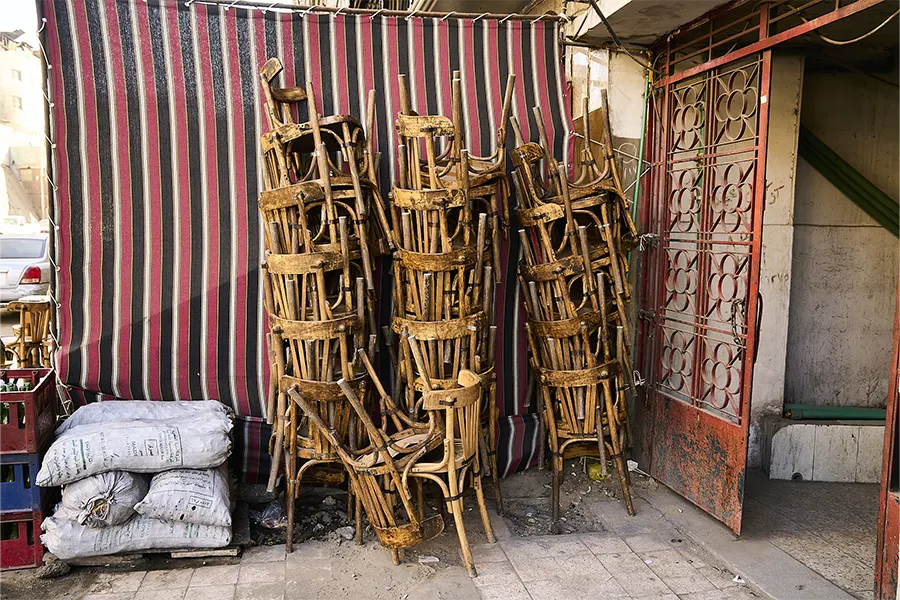